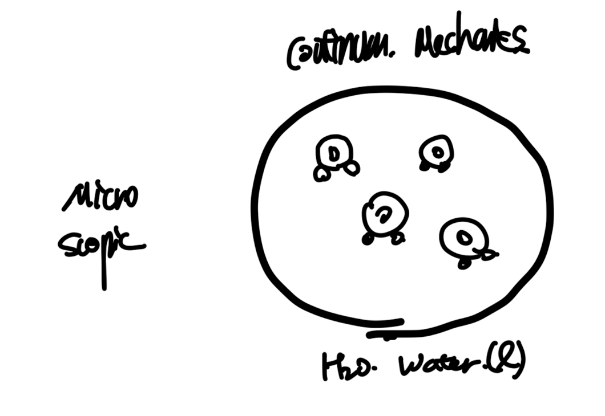
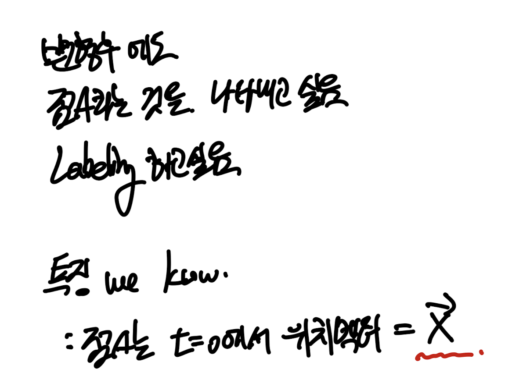
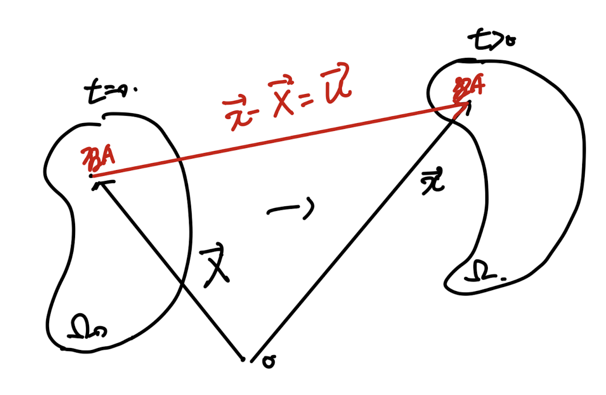
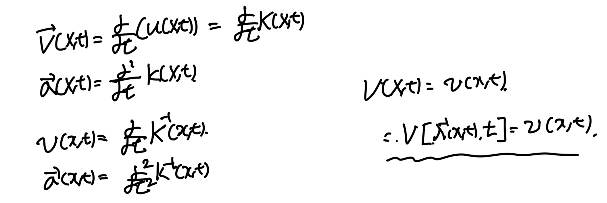
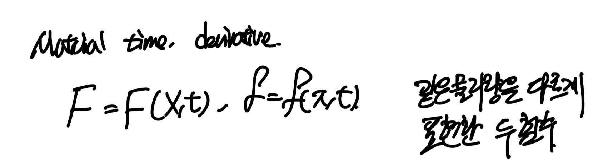
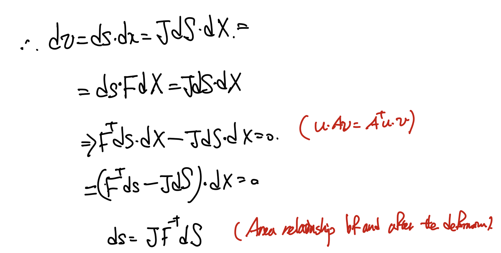

지난 시간까지 기본적인 수학 symbol들과
연산기호들에 대해서 알아보았다.
(Vector, Tensor)
이 기호들로 우리는
고체에 일어나는 물리현상들을 설명할 것이다.

위 의자에 굉장히 무거운 사람이 앉으면 저 의자의 다리는
견디지 못하고 부서질 것이다.
부서짐 -> 의자다리의 motion deformation
지금부터 우리는 이러한 deformation, motion을
분석하는
Kinematics
에 대해서 살펴볼것이다.
(주의사항, deformation motion 변형과 움직임 만 살펴보고,
가해지는 힘은 지금은 분석하지 않는다)
(왜 구분하는지는 추후에 배우면서 이야기 해보자)
2.1 Configurations, and Motions of Continum Bodies
시작하기 전에,
우리가 이야기 하고있는 continum mechanics에 대해서
정확히 정의하고 넘어가자.

어항 안에 물이 담겨 있다고 가정해보자.
우리가 저 점A에서 물의 압력, 속도 밀도
즉 Certain field quantities(물리량)을 측정할 수 있다.

하지만 실제로 저 점을 확대해서 보면,
수많은 물 분자들이 무작위 움직임(Brownian motion)
을 가지고 있다.
결론적으로, 한점에 대해서 정확한 물리량을 측정할 수가 없게 된다.
하지만 우리는 macroscopis, 거시관점에서
이 점에서의 quantites가 측정가능하고,
일정하다고 가정을 한다.
이러한 가정은
물을 Continum medium
즉 측정가능한 물리량의 연속적인 변화로 이루어진 매개체
라고 가정하는 것이다.
다시 정리하면, 각 점마다 우리가 측정하고 싶은
속도, 압력, 밀도 등등 이 측정가능하다고 가정하고 시작하자.
Defintion of Continum body
여기서 연속체 body는 개념이 한단계 더 들어간다.
즉 저렇게 particle마다 다양한 물리량이 존재하는 것까지 우리가 본다면
한단계 들어가서 particle마다 저 값들이 연속함수로 표현할수 있나,
즉 연속적인가???? 라는 질문이 나올 것이다.
여기서,

우리는 Mass Volume이 Particle에 따라
Piecewise continous function 이라면,
Continum body라고 정의한다.

Body가 시간에 따라 변형하는 것을 원점이 O인 좌표평면에서 바라본 시각.
먼저 Body의 particle이 존재한 region을
Ω이라고 정의한다.
그리고 변형전 초기의 region을 Ω0라고 하자, 변형후를 Ω
그리고 변형전 임의의 점 A를 찍고 변형후에 우리는
이점이 어디에 위치하는지를 중심적으로 해석할것이다.
[position vectors]
Vector X - 변형전 OA - reference position vector
vector x - 변형후 OA - current position vector.
여기서 우리가 하고싶은 것은 x 를 X로 표현하고 싶다.
근데 표현할 수 있을 것 같다. 왜:???
시간이 지나도 같은 점A의 위치벡터라는 사실을 알기 때문에.
변형후에도 같은 점이라는 것을 어떻게 표현할까?

바로, 변형전 위치벡터가 X인 것을 이용한다
따라서, 우리는 다음과 같이 X,t를 인수로 함수에 넣으면 x
나중 위치벡터가 나오는 함수를 정의하고,
그 함수를 "Motion" 이라고 부른다.
(vector, scalar를 인수로 받고 vector를 output하는 함수)
잘 생각해보면, X,t에 따라 x라는 벡터는 유일하게 존재하는
일대일 대응함수라는 것을 알수 있다.(각 particle은 한개씩만 존재하기 때문에)
따라서, 일대일 대응함수의 특징은
역함수가 존재한다는 것!

즉 우리는 X,t로도 현재 상황을 표현할 수 있고,
x,t로도 현재 상황을 표현할 수 있게 된다.
(둘다 가능함)
따라서,
X를 기반으로 표현하는 방식을
Material or referential or Lagrangian description
(변형전 position vector 기반)
x를 기반으로 표현하는 방식을
Spatial or current or Eulerian Description
(변형후 position vector 기반)
2.2 Displacement, Velocity, Acceleration Fields.

Configuration of deformation of body at time t
여기서 우리는 고체 particle의 속도, 가속도를 측정하고 싶다.
속도를 측정하기 위해서는
그 particle의 이동변위에 대해서 정의해야한다.
[Definition of Displacement Vector]
u = x - X
(x: current position vector
X: referential position vector)
이 변위 벡터는 위치벡터와 시간의 함수라는 것은 쉽게 알 수 있다.
여기서 위에서 언급했다 싶이 x -> X, X -> x로 서로 상호 표현이 가능하다.

따라서 우리는 X를 기준으로, 혹은 x를 기준으로 각각 u를 정의할 수 있다.
(정의방식만 다르지 결국 같은 값이다)
(Ch1에서 tensor의 고유값, 고유벡터는 일정하지만,
Basis에 따라서 Aij가 바뀌는 것과 동일하다)
계속해서 언급할 것이지만, X를 기준으로 표현한 식은
무조건 앞에
Lagrangian
x를 기준으로 표현한 식은
Eulerian
위에 정의한 변위벡터를 가지고 우리는 속도, 가속도 벡터를 정의할 수 있다.

velocity and acceleration vector functions along with the X or x
또 언급하지만 v,a결국 같은 값을 X,x 각각으로 표현할수 있다!
(이제부터 모든 정보들을 X또는 x로 표현할 것이다. 둘다 항상 가능하다)
2.3 Material, Spatial Derivatives.

우리가 편미분을 진행할때 숨겨진 가장 큰 의미는,
다른 variables들을 고정이라 하고,
원하는 편미분 방향 인수만을 기준으로 순간변화량을 구한다.

우리가 시간에 대해 미분하고 싶은 어떠한 함수 F(X,t)
Mateirla time derivative의 정의는
!!!!X를 고정하고!!!!! 시간에 대해서 함수를 미분한 값이다.

F(X,t)같은 경우 X,t로 구성되어 있는 함수이므로,
편미분식과 동일함을 알 수 있다.
(당연하지만 이후에 당연하지 않게 된다)
Material Gradient, divergence
모두 X에 대해서 미분항이 존재한다는 것.

material derivative for gradient and divergence
(표기로 uppercase G,D를 앞에 사용하면,
Material derivative임을 인지하자)
위와 반대로 x에 대해서 미분한
spatiala time derivative, spatial gradient
즉 앞에 spatial이 들어가면 x에 대해서 미분한 항들이다.
특히 time derivative는 x고정 기준으로 시간에 대해 미분하였다.

여기서 두 개념을 섞어보자.
"Material Time derivative of a spatial Field"
Material time derivative -> X고정하고 t로 미분,
spatial field -> X 대신 x로 표현.

mapping function을 활용하여 x를 X로 바꾸어 주자.

이후 chain rule을 진행해 주어야 한다.
왜냐하면 이제
λ(x,t) 항도 시간에 따라 변하기 때문이다. 따라서,
chain rule을 적용시켜주면, 뒤에 다음과 같이 추가항이 생긴다.
두 항에는 의미가 숨겨져 있다.

1번은 결국 시간에 따른 f값 자체의 변화이고,
2번은 공간에서 입자의 움직임에 따라서 f변화량이다.
바로 f를 속도벡터로 대입해보자.

시간과 공간에 따른 acceleration으로 나누어 짐을 알 수 있다.
결국 어떠한 점 x에서의 시간에 따른 어떤 물리량 f의 변화량
(current position 기준)
시간 자체에 따라서도 변하지만,
body를 입자라고 보는 순간 x좌표에 존재하는 입자의 변화 자체 즉
공간적 변화에 따른 변화량도 존재한다
(시간에 따라 입자의 위치가 변하기 때문에)
(이 개념이 살짝 추상적이고 이해하기 어려운 부분이다)
(x고정의 의미가 무엇인지 잘 생각해보자)
2.4 Deformation Gradient tensor.

Gradu = [u(X+dX,t) - u(X,t) ] / dX 라고정의하면

다음과 같은 관계식을 얻을 수 있다.
잘보면 dX 벡터가 dx벡터로 변환 된 것을 알 수 있다.
결국 vector mapping -> role of tensor
이 문장이 떠올라야 한다.

따라서 여기서 우리는 Mapping 해주는 Tensor, F
Deformation gradient tensor
라고 부른다.
새롭게 정의한 tensor가 굉장히 많이 쓰이지만,
부피 면적에 대해서 사용해보자.

dv - current volume, dV - inital volume
위식은 정말 굉장히 많이 쓰이는 식이다.
부피 변화를 나타내는 tensor가 Jacobian이라 정의하고,
det F로 표현 할수가 있다.
두번째로, 면적의 변화에 대해서 살펴보자.
변형 전 후, 면적벡터를 다음과 같이 정의한다.

N: 변형전 면적 법선벡터, n: 변형후 면적 법선벡터.
여기서 위 area vector와 변형전후 부피 식을 연립하면,

변형전후 면적벡터의 관계식이 도출된다.
이 관계식을 Nanson's Formula라고 부른다.